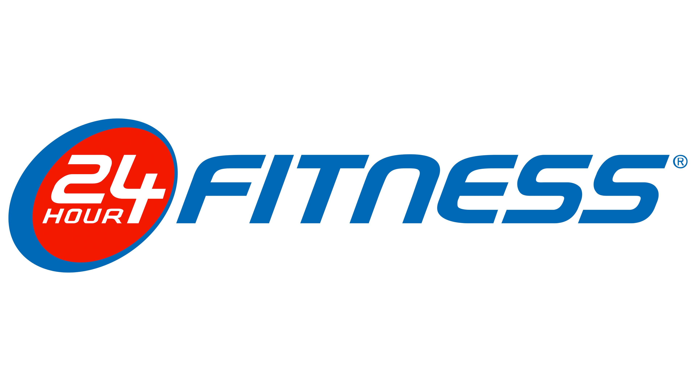

24 Hour Fitness: Redefining Wellness Around the Clock
As part of my marketing coursework, I analyzed 24 Hour Fitness, a well-established fitness brand facing challenges in an evolving market. The case study involved evaluating 24 Hour Fitness's strategies and proposing actionable solutions for long-term growth.
Key highlights include:
- Market Analysis: Assessed 24 Hour Fitness's position in a saturated fitness industry with changing consumer preferences towards integrated fitness and wellness solutions.
- Strategic Framework: Applied the Blue Ocean Strategy to identify opportunities for differentiation and expansion into underserved markets.
- Brand Repositioning: Developed recommendations to redefine 24 Hour Fitness as a holistic lifestyle partner, addressing evolving customer needs beyond traditional gym services.
This project enhanced my ability to apply marketing frameworks to real-world scenarios, developing my skills in brand strategy, market analysis, and innovative solution design for the competitive fitness industry.
View My Deck